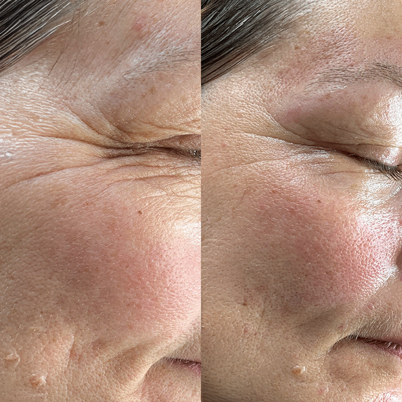
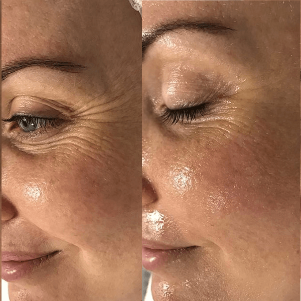
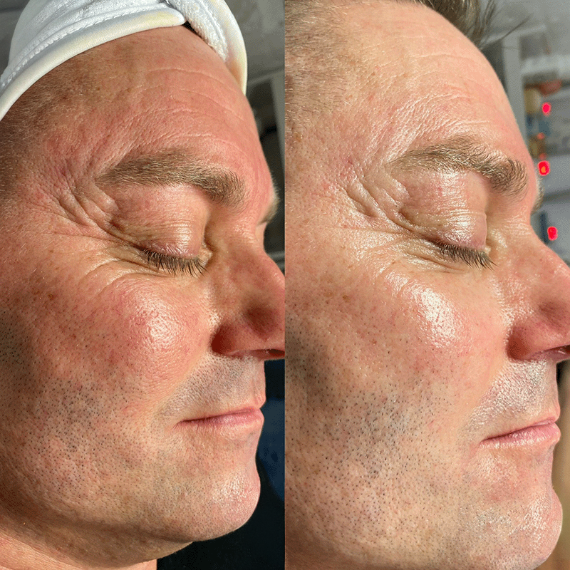
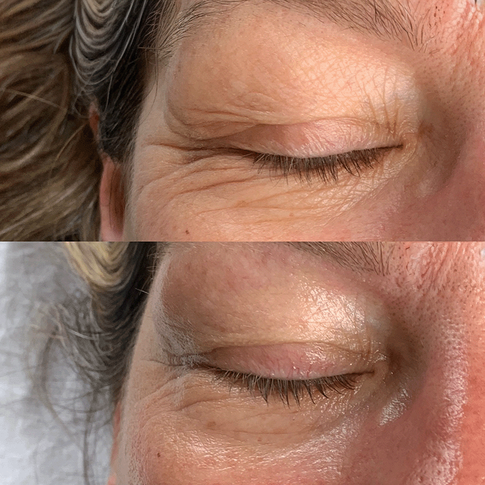
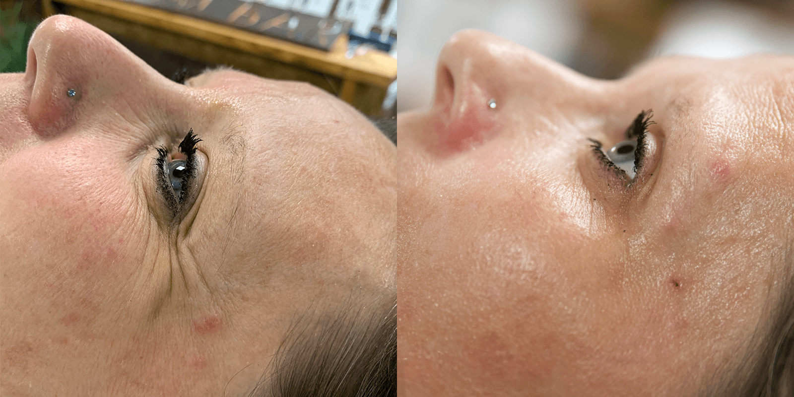
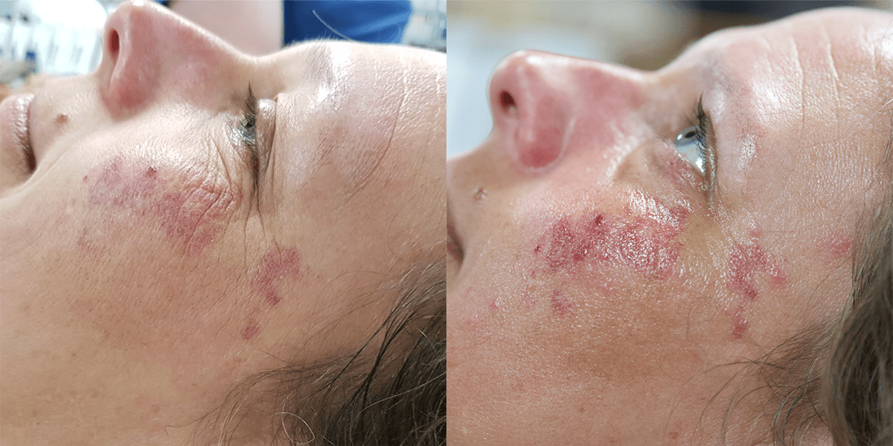
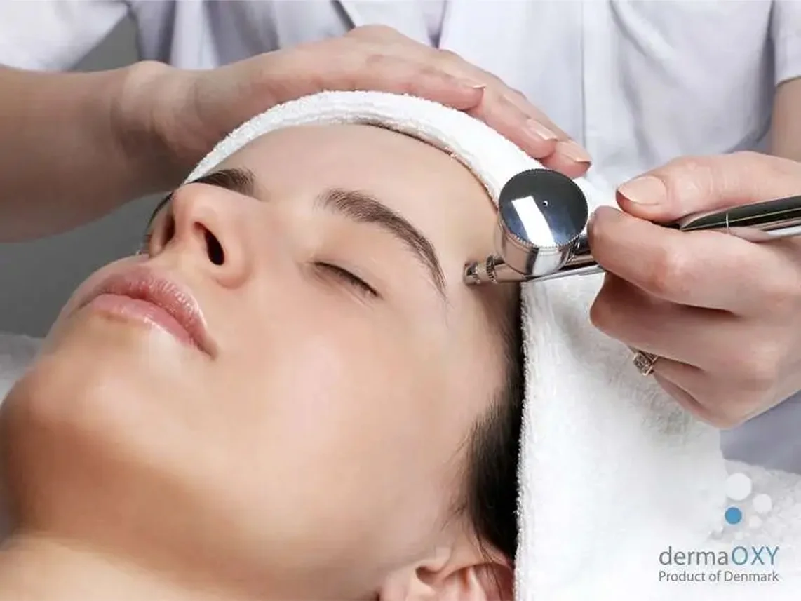

Галерия "Преди и след"








Кислородната концепцията Derma OXYе създадена да работи в синхрон с кожата. Фокусирана е върху селективни съставки от натурален произход с цел висока ефективност. Основната идея е да се съхранява здравето, хидратацията и структурата на кожата. Селектираме само най-ценните съставки, които имат доказан анти-ейдж ефект. Процедурата и продуктите имат доказан ефект върху намаляване на бръчките, финните линии и увеличаване на хидратацията на кожата.
Това е един ефективен и безопасен метод с анти-ейдж въздействие с резултат като след ботокс, но без болезненото инжектиране.
По време на кислородна терапия се използва под налягане кислород, който доставя подхранващи и високо ефективни съставки в по-дълбоките слоеве на кожата – дермата, където те могат да действат истински и да противодействат на признаците на стареене.
Кожата ни е естествено устойчива на външни вещества, което означава, че кремовете и серумите сами по себе си трудно проникват по-дълбоко от най-външния слой на кожата.
Процедурата започва с устройство тип аерограф, което използва чист въздух под високо налягане, за да внедри серум през външния слой на кожата и да го достави до дермата. Този серум съдържа широк спектър от активни противостареещи съставки, като хиалуронова киселина за хидратация и ретинил, който стимулира обновяването на клетките.
След това се използва въздух с концентрация на кислород 90%, за да се „масажират“ активните съставки още по-дълбоко в кожата, до самото дъно на дермата. Високата концентрация на кислород активира компонентите на серума и усилва техния противостареещ ефект.
Това осигурява оптимално усвояване на активните съставки и позволява видимо намаляване на бръчките и фините линии само 20 минути след процедурата.
Ако желаете ефективно да се борите с признаците на стареене, можете да преминете курс от процедури, в който кислородната терапия се комбинира с микродермабразио на dermaOXY. Тази процедура дълбоко почиства кожата и я прави по-отзивчива към активните съставки, които се въвеждат по време на кислородната терапия.





